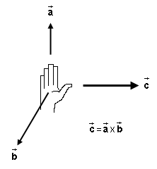
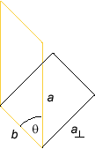

Prerequisites
Students should be familiar with the contents of the parallel Lesson and with the concept of the vector product. A review of the properties of the latter is available in an Appendix on The Vector Product.
Learning Outcomes
Students will develop a more general understanding of the force (magnitude and direction) exerted by a magnetic field on a charged particle and will learn to describe this force in a mathematically efficient way.
Instructions
Students should know how the applet functions, as described in Help and ShowMe.
The applet should be open. The step-by-step instructions in the following text are to be done in the applet. You may need to toggle back and forth between instructions and applet if your screen space is limited.
 Vector Equation for the Magnetic Force
Vector Equation for the Magnetic Force
 Appendix
Appendix

Vector Equation for
the Magnetic Force
In the accompanying Lesson, it is shown that the direction and
magnitude of the force exerted by a magnetic field  on a particle carrying electric charge q are
as follows.
on a particle carrying electric charge q are
as follows.

Figure 1
The force acting on the particle is normal (perpendicular) to
the plane spanned by the particle's velocity vector  and the magnetic field vector at that point.
and the magnetic field vector at that point.
To determine along which normal to this plane the force
points, hold your right hand flat, with outstretched fingers in
the direction of the velocity ,
with the thumb pointing off to one side in a direction
perpendicular to the plane spanned by and , and with
the palm facing in the direction of . When you curl the fingers of your right hand,
they should curl towards . The
thumb will then be pointing in the direction of the magnetic
force  .
.
F = |q| v B  if
if 
 .
.  (1)
(1)
If the velocity is parallel to the magnetic field, the force is 0,
F = 0  if
if  ||
.
||
.  (2)
(2)
It would be nice to be able to give a single vector equation
that combines the right-hand rule and Equations (1) and (2) and
generalizes these Equations to the case when is neither perpendicular to nor parallel with .
This is indeed possible, but it requires the use of the vector product. A brief review of the vector product is provided in an Appendix on The Vector Product.
In terms of the vector product, the magnetic force in all situations can be written
= q X.  (3)
(3)
You need to memorize the order of the vector factors in
Equation (3): comes first, last. The direction of is reversed if you reverse the order
of these factors. The order of the factors is also important in
memorizing the right-hand rule. The outstretched fingers of the
right hand are in the direction of the first factor, . In subsequently curling the fingers
of the right hand, they are curled towards the second factor, .
Exercise 1. Test if Equation (3) is correct by testing with the applet whether the following predictions of the equation are true:
reverses when the sign of
q is changed; reverses when is reversed reverses when is reversed; is perpendicular to ; is parallel
to .Exercise 2. Write down the Cartesian (x,y,z)-components of the magnetic force by transcribing the general vector product equation (A6) in the Appendix for the special case of force expression (3).
Answer. Substituting the symbols from Expression (3) into Equation (A6) gives
=
(Fx,Fy,Fz)
= q (vyBz -
vzBy,
vzBx -
vxBz,
vxBy -
vyBx).  (4)
(4)
Let us choose the x and y axes to be in the orbital plane (plane of the screen), the x-axis horizontal and to the right and the y-axis vertical and upward. Then the z-axis will be perpendicular to this plane and towards the viewer (out of the screen), to make this a right-handed coordinate system.
Suppose is towards the viewer
(out of screen). Then
=
(Bx,By,Bz)
= (0, 0, B) . (5)
(5)
Substituting this into
Expression (4) gives
=
(Fx,Fy,Fz)
= q (vyB - 0, 0 -
vxB, 0 - 0) = q B
(vy, -vx, 0).  (6)
(6)
For a velocity that is directed in the positive y-direction,
=
(vx,vy,vz)
= (0, v, 0) ,  (7)
(7)
Expression (6) reduces to
= q B
v(1, 0, 0) . (8)
(8)
This is a force pointing in the positive x-direction if q > 0 and in the negative x direction if q < 0. Expression (8) gives |q| v B for the magnitude of the force, which agrees with Expression (1).
Exercise 3. Verify Prediction (8) for the direction of the force by running a motion in the applet and pausing it when the velocity is straight up (in the y-direction). From what you know about the direction of the force in uniform circular motion, is the direction of the force as predicted?
Exercise 4. Work out the components of the force at a moment when the velocity is pointing in the north-west direction. Does Expression (6) yield a force vector that has the right direction and magnitude? Hint: What are the components of the velocity vector in this case, expressed in terms of the magnitude v of the velocity?
Exercise 5. Choose both
and to be in the
x-direction. Work out the force in this case using
Expression (6). Does the applet confirm your result?
Exercise 6. Suppose
points in the z-direction and the velocity has a non-zero
z-component vz.
denote the velocity component vector in the
(x,y)-plane. Use the expression for the force you
have obtained in the first bullet, to write down an expression
for the magnitude of the force in terms of the magnitude
v of . Hint: What are the components of ?

>>>>> Appendix <<<<<

Figure A1
The vector product, illustrated in Figure A1, is a rule
that assigns to two vectors  and
and
 a third vector
a third vector  . The vector product is written with an "X" for the
multiplication sign,
. The vector product is written with an "X" for the
multiplication sign,
= X
.  (A1)
(A1)
The vector product is therefore also called the cross product.
The vector product is defined only in three, not two or one dimensions, and it does not have all of the properties of multiplication that we are used to from the multiplication of numbers.
To see how the product vector
can be obtained from the factors
and , let us discuss in turn the
direction and magnitude of and the
calculation of the components of in
terms of those of and .
. Two
vectors and span a plane. This plane is indicated in Figure A1
by the dark grey surface. Only in the special case when the two
vectors are collinear do they not span a plane. In this case, their
vector product is equal to zero.
The vector = X is normal
(perpendicular) to the plane spanned by and .
The only question is: "Along which normal is it?" There is one normal sticking out of one side of a plane and another normal sticking out on the other side. The following right-hand rule, illustrated in Figure A2 below, lets you decide which normal it is.

Figure A2
Hold your right hand flat with outstretched fingers in the
direction of vector and with
the thumb pointing off to one side in a direction perpendicular
to the plane spanned by and
. There are two such directions
in which the thumb could point. Which is the right one?
The right direction for the thumb is the one in which your
palm faces in the direction of vector . When you curl the fingers of your right hand,
they should curl towards . The
thumb will then be pointing in the direction of = X .
If your palm faces in the wrong direction, rotate your hand by 180o around the axis that points along the outstretched fingers.
.
The magnitude of is equal to
the area of the parallelogram spanned by and . This
parallelogram is shaded light grey in Figure A1 above.
When and are collinear, the area of the parallelogram
and the vector product = X
are zero.
When and are perpendicular to each other, the
parallelogram is a rectangle with area equal to ab. Thus,
c = ||
= ab  if
if 
 (A2)
(A2)
When and are not perpendicular to each other, the area of
the parallelogram can be calculated as illustrated by the
diagram in Figure A3 below. The trick is to replace the
parallelogram (yellow) by a rectangle (black) of the same area.

Figure A3
The parallelogram has the sides a and b. The rectangle of the same area has the sides a and b. The area of the rectangle is equal to ab.
Therefore Equation (A2) can be generalized to
c = || =
ab  (A3)
(A3)
where the proviso is now no longer necessary.
One can make a right triangle containing sides a and
a and the angle
q where the angle q is the angle between the vectors and .
Basic trigonometry applied to this triangle implies a = a sin q. Substituting this expression into Equation
(A3) gives
c = || =
a (sin q) b  (A4)
(A4)
.
Suppose the Cartesian (x,y,z)-components are
given for and :
=
(ax,ay,az)  (A5a)
(A5a)
=
(bx,by,bz).  (A5b)
(A5b)
Then the Cartesian components of can be shown to be equal to
=
(cx,cy,cz)
= (aybz -
azby,
azbx -
axbz,
axby -
aybx).  (A6)
(A6)
Notice the "cyclic permutation" of the subscripts x,y,z in this equation.
The vector product behaves like a product of numbers in the
following sense. If c and d are numbers, then for any
two vectors and it is true that
(c ) X
(d ) = (cd) ( X ).  (A7)
(A7)
The vector product also obeys the distributive law. If , , and
are three arbitrary vectors, then
( + ) X =
X
+ X .  (A8)
(A8)
However, in a number of other ways the vector product does not behave like a product of numbers.
and ,
X = - X
.  (A9)
(A9)
, , and ,
in general ( X ) X is not
equal to X ( X ). is equal to . there
exists no "inverse vector", -1, such that X -1 is
equal to a unit vector like
the one imagined in the previous bullet, because such an does not exist.
This means that one can not divide by vectors.